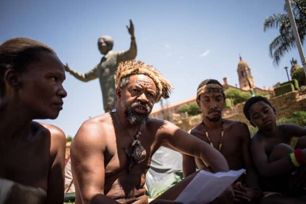
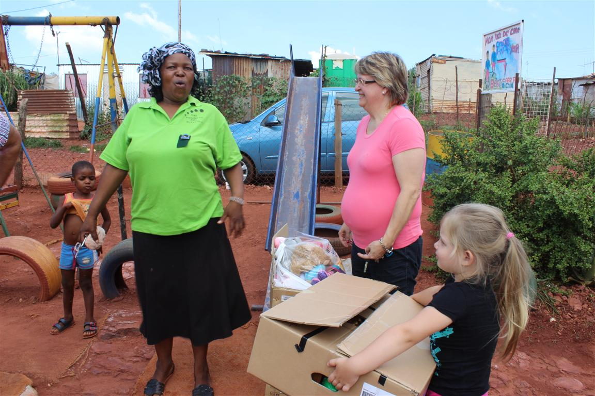

Since the end of Apartheid, South Africa has sought to find its way as a democracy.
Its culture continues to be vibrant and cutting edge and the country has enormous
potential to be a unique multicultural hub but it still has troubling
social problems to address, uneven development caused by its segregationist past and
maintaining stable government.
Goverment
In 1994, Nelson Mandela was elected president in South Africa's historic first democratic
elections. His party, the ANC have won every election since 1994. Mandela's vision was for
a "united, non-racial, non-sexist, democratic and prosperous society".
There have been upheavals in government as the country finds its way as a
new democracy. South Africa may face more upheavals as it tries to unify and solidify itself as a new nation.
Corruption and faulty leadership is also affecting Government Life in South Africa.
Corruption scandals and uncertain leadership.
Life for natives now carries more opportunities. The ANC repealed all
apartheid laws, bringing an end to segregation in the media, schools, and in public office. More people
have access to vital services and are able to participate fully in all areas of citizenship.
In 1994, 51% of South Africans had access to electricity. By 2016, 90% of
South Africans had access to electricity.
In 1994, 58% of South Africans had access to water. By 2016, 84% of South Africans
had access to water.
Less people are living in insecure housing, that is makeshift shacks, down to 13%
compared to 16% in 1994.
There is now free primary health care for all South Africans.
Blacks continue to have a high unemployment rate compared to other races in South Africa
but more than double the amount of black South Africans are employed in 2018 than were in 1994.
Black Unemployment Rates vs Unemployment Rates of other Race Groups.
New Tensions
The main issue being discussed in South Africa at the moment is land expropriation. 72% of South African
land is owned by whites even though whites make up less than 10% of the population. Blacks
own 4% of the land but are 75% of the population. This stems back to the Afrikaners and British
taking of the land and the passing of laws such as The Natives Land Act 1913,
where blacks were forcibly removed from land and restricted from buying or owning desirable land in South Africa.
The KhoiSan are also asking for South Africa to be returned to them and as original dwellers have
some stake in the land. Underlying racism and lack of understanding between groups also
continues to foster problems.

Community, Crime
Safety continues to be an issue in South Africa. Citizens, continental africans and potential travellers feel
insecure about the country. South Africa has a high murder and sex crimes rate, its the 5th most violent country in the
world, with 20,000 murders committed annually which is to say 57 people being murdered every day. This has caused a lot of
people, especially whites to emigrate. Whilst a sizable number have chosen to return and seek to imprvove
relations between poor and rich, and between races, one of the key ways to ensure South Africa will prosper
is fixing the issue of violent crime.

The Future
Each group in South Africa has its cultural factors and traditions, but
a distinct South african identiy is emerging. The latest round of elections to elect
a new president are coming, with land redistribution one of the key policies at stake.
Given the harsh and ill treatment meted out by white South Africans
when they were in power, it isn't particularly suprising that
many in South Africa are not ready to forget its Apartheid past so easily. Land redistribuion
on fair terms may help address some of the key problems caused by aggresive and racist
practices in the past.